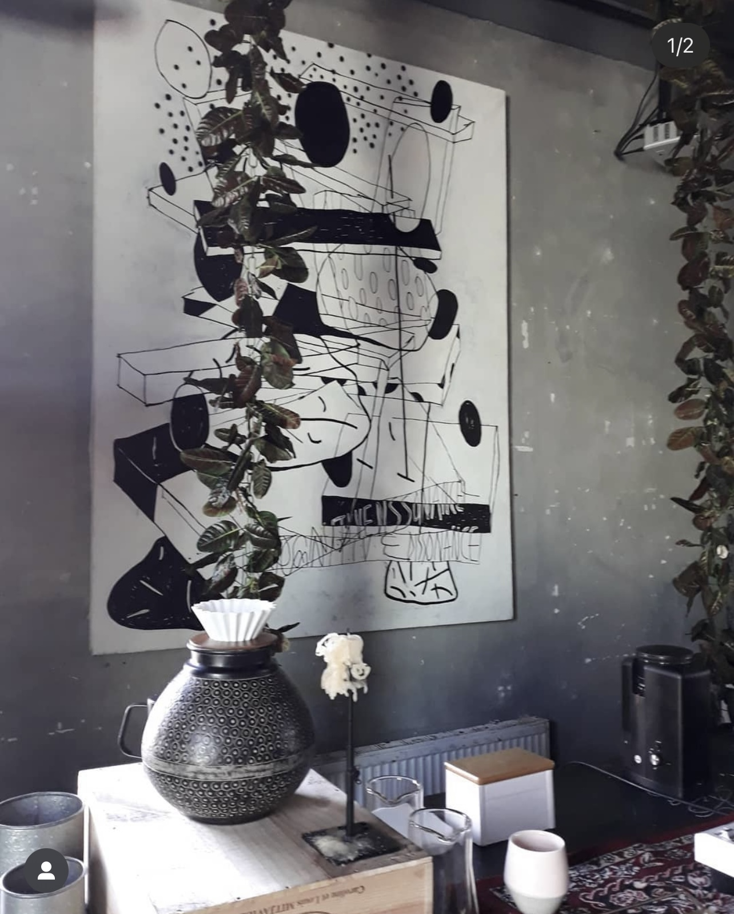
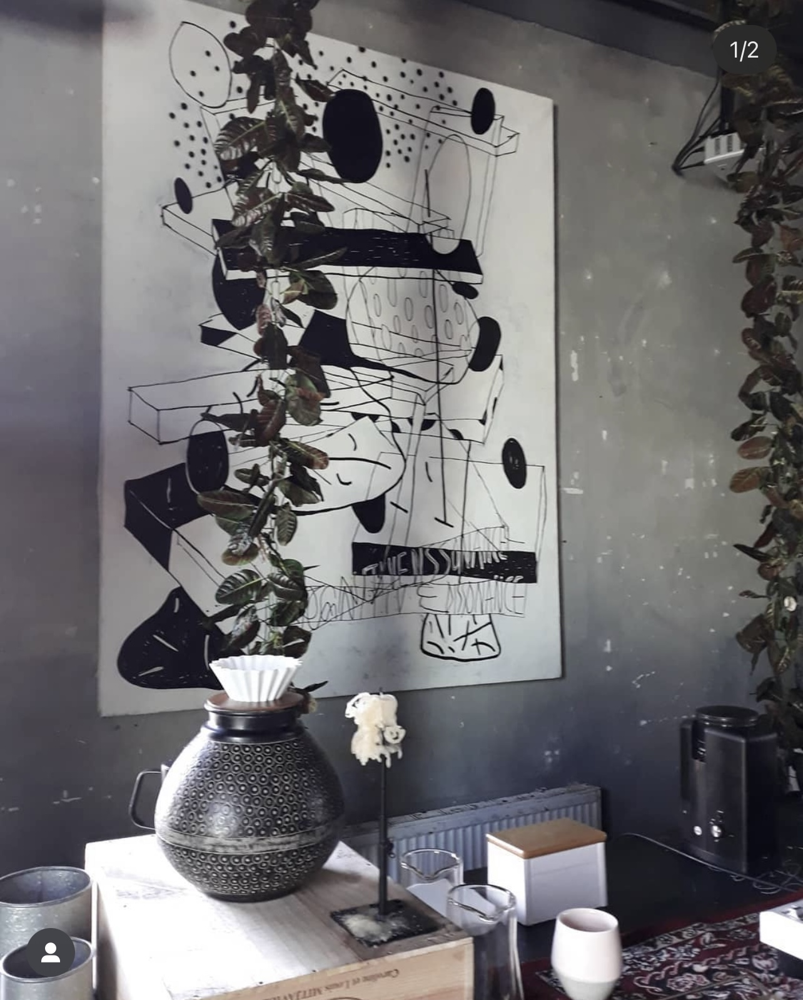
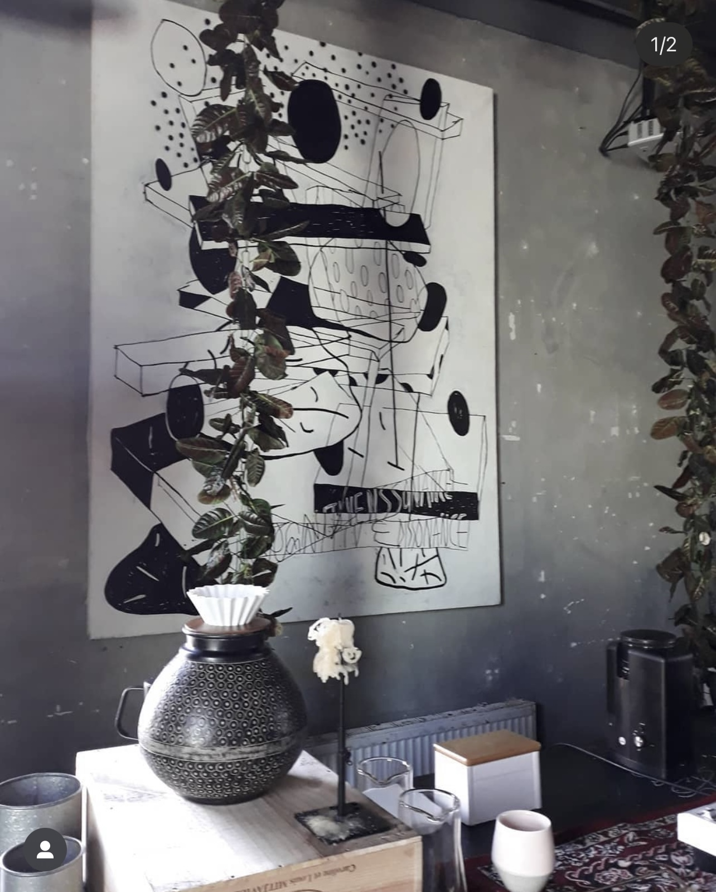

random coffee experiments, moscow, 2019-2020
The random coffee experiment practices aim to explore taste as a phenomenon, its place in our memory and life, and the influence one's life and experience have on the taste preferences and appreciations. The experiments were a series of 7 events with a total of over 150 individual tastings. They were conducted according to the artist's script, in specifically prepared venues. The conditions in which the artist conducts the tastings aimed at reinforcing focus on the perception of taste. The task of the experiments was to reveal the connections between the sense of taste, in particular coffee, and the memory and personal experience of the visitor. In the experiments, the participants were asked to evaluate the aroma, taste, and aftertaste of the brew based on atypical synaesthetic categories of color, texture, and shape. This approach allowed the audience to look at the product they were consuming through the eyes of the artist, in particular to notice something special about their perception of coffee and to apply this tasting method to other products or aspects of life. The artist collected a library of intolerable coffee descriptors from her experiments. And using this particular example, she was able to conclude that people sense inedible descriptors in edible products.
